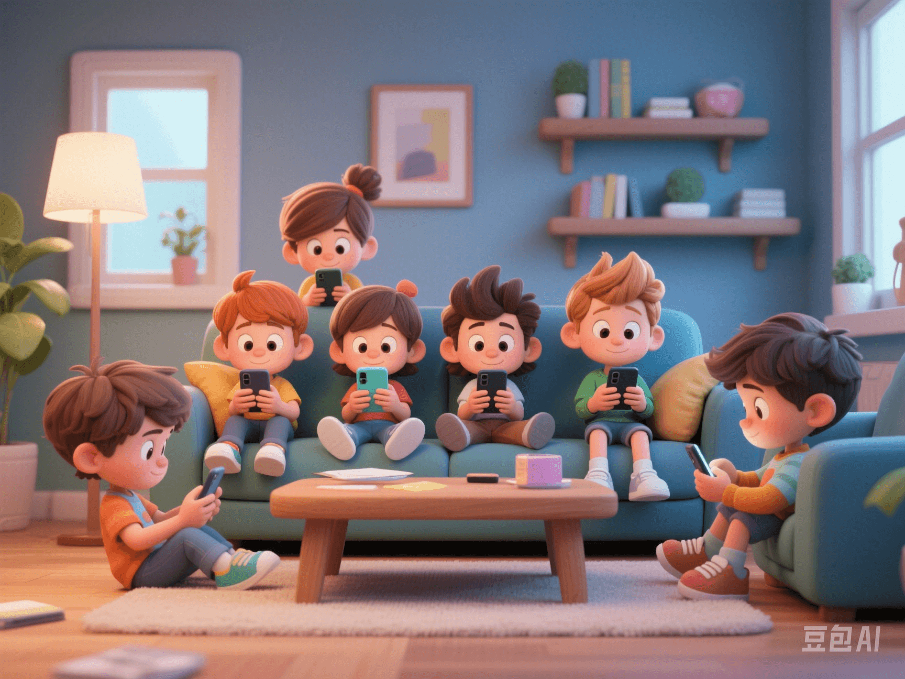

Teen Mental Health Alert: Is Your Child at Risk?
PeaceLove.Top Insights :2025-04-12
“My daughter grabs her phone to scroll through TikTok as soon as she gets home from school. Her mood has been getting worse and she often hides in her room and cries.” This is a parent's outpouring in a psychological counseling room.
In today's fast - paced and high - demand modern society, the incidence of mental problems among teenagers is increasing year by year. Don't think that “kids have no troubles”. Their world also has an inexpressible heaviness.
In the past few years, terms like “teenage depression”, “campus anxiety”, and “teenage self - harm” have frequently appeared on the hot search lists, attracting the attention of the whole society. In 2023, multiple states in the United States officially sued social platforms such as Meta and TikTok, alleging that these platforms' “addictive algorithms” have seriously damaged the mental health of teenagers. This lawsuit is not an accident but just the tip of the iceberg.
🎯 Three Core Issues, Not to Be Ignored!
1⃣ Social Media Anxiety: Likes as the Yardstick of “Self - Worth”
Hot search terms: “TikTok causes depression”, “social platform anxiety disorder”. Nowadays, children almost all have mobile phones starting from primary school. In the ocean of Instagram, TikTok, and Xiaohongshu, they are surrounded by a sea of “perfect lives” and “flawless personas” every day. It's easy for them to fall into self - doubt, thinking, “Why am I not as good as others?”
Teenagers are in a critical stage of self - identity development. When they use the number of “likes” and “followers” as a measure of self - worth, inner emptiness and anxiety follow. Data shows that there is a significant positive correlation between the frequency of social media use and symptoms of depression and anxiety.
📌 Typical symptoms: Obsessed with short - video scrolling, frequent selfies, overly concerned about comments and likes, self - denial, irritability, and easy crying.
2⃣ Overwhelming Academic Pressure: Exams as the “Only Way Out”
“I'm not studying for my dreams but to avoid being left behind.” This is the true feeling of many children. The competition for grades, contests, and resumes has made the anxiety of “falling behind if not working hard” go beyond just learning. Parents are anxious, teachers are anxious, and the whole society is anxious. This anxiety spreads like an infectious disease into every classroom and family.
Especially with the huge pressure of high - school entrance exams, college entrance exams, and studying abroad, many teenagers show obvious anxiety, sleep disorders, and may even develop school aversion and self - harm behaviors.
📌 Typical symptoms: Lack of motivation to study, declining grades, persistent insomnia, physical symptoms (headaches, stomachaches), and feeling confused about the future.
3⃣ Surge in Self - Harm Behaviors: Misplaced Emotional Outlets
Some self - inflicted wounds are not for attention but to make the pain “visible”. According to World Health Organization data, the incidence of self - harm among teenagers aged 15 to 19 is rising, especially among girls.
Self - harm doesn't necessarily mean suicidal intent. Often, it's the only “outlet” they find when under extreme pressure and emotional breakdown. Misleading “glorifying content” about self - harm on social media, such as “self - harm challenges” and “scar displays”, makes some teenagers think it's a trendy way to vent.
📌 Warning signs: Always wearing long sleeves, having scratches on the body, abnormal behavior, avoiding people, and being less sensitive to pain.
💼 Real - Life Case: US Lawsuit Against Social Platforms
In 2023, 33 states in the United States jointly filed a class - action lawsuit against Meta and TikTok's parent company. The lawsuit stated that “the platforms know their content will exacerbate teenage addiction and cause anxiety and depression, but still prioritize commercial interests over user health.”
The lawsuit cited numerous cases of teenage self - harm, anxiety, and even suicide. Some children joined so - called “weight - loss groups” on TikTok and finally developed severe anorexia; some chose to end their lives due to cyberbullying. This incident has sounded the global alarm: Do we really understand our children's world? Are we really listening to their emotions?
🛡️ What Should Parents and Schools Do?
🔑 The key is not to prevent but to guide!
✅ One: Create an Open and Warm Family Atmosphere
Children are not machines or exam - taking tools. They need someone to talk to, not parents who only say, “You should strive for success.” Try to replace “Why are you so stupid?” with “I care about how you feel.”
✅ Two: Stay Aware of the Online World
Parents don't need to completely ban the Internet. Instead, they should “participate together”: understand what their children are watching, discuss whether the content of short - videos is real and healthy, recommend positive and interesting accounts, and make a “screen - time plan” with their children.
✅ Three: Start Emotional Education Early
🔑 Emotional management should not start only when problems occur. Children should learn from an early age: recognize emotions (e.g., this is anxiety, not “I'm a failure”), accept emotions (emotions are not enemies but reminders), and express emotions (such as through painting, writing a diary, or exercising instead of suppressing or exploding).
💬 Recommended books: I and My Little Monster Emotions, Imperfection Is Beautiful.
📱 Recommended apps: Forest (to help with concentration), breathing training apps, and children's meditation apps.
🌈 Conclusion: Provide a Mental “Umbrella” for Children Together
Adolescence is not a smooth journey, but with companionship, teenagers can overcome any difficulties. Don't let children face an emotional world they can't understand alone. A hug from parents, an affirmation from teachers, or a listening ear from peers may be the light that helps them through the dark times.
🕊️ May every child have a healthy mind and confidently move towards tomorrow.